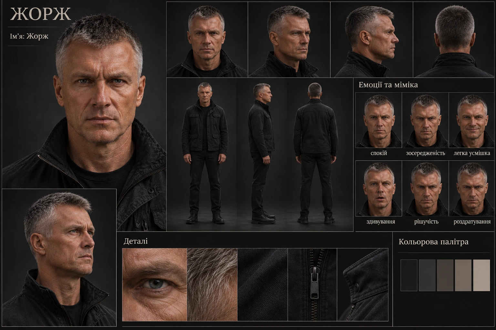

PROFILE
Counterintelligence and opposition to the Order
Georges is an experienced characterник with extensive experience confronting organisations that infiltrate societies, seize centres of influence and provoke internal collapse. In the events described in the book, he leads his department and takes part in identifying and neutralising the Order's network.
Name: Georges
Status: characterник
Field: Counterintelligence
Specialisation: identifying agent networks, threat analysis and operational coordination
Age: not specified in the manuscript
Height: not specified in the manuscript
EXPERIENCE AND PRINCIPLES
Recurring threats across different worlds
Georges has encountered organisations that follow a similar pattern: quietly infiltrating a society, gradually gaining influence and eventually causing the civilisation to destroy itself. The first experience described in the manuscript took place many decades earlier on a world in a neighbouring branch of worlds, where he served as an ordinary assault trooper accompanying diplomatic and scientific missions.
This experience made him attentive to concealed threats and cautious about unverified information. Even when evidence points to the Order, Georges does not rush to present conclusions as certain.
STORY ROLE
Counterintelligence coordination
After the Order's Ukrainian network is destroyed, Georges's department has no shortage of work. He helps analyse new risks, including possible infiltration of the international peacekeeping contingent. Thought-link communication allows the community to exchange information quickly, but also makes careful access control essential.
Georges also helps prepare newly initiated characterники. He explains their place in the community, supports them through their first major thought-flow and stresses that each person must choose their own path.
Age and height are not specified in the visual dossier, so these details have not been added.